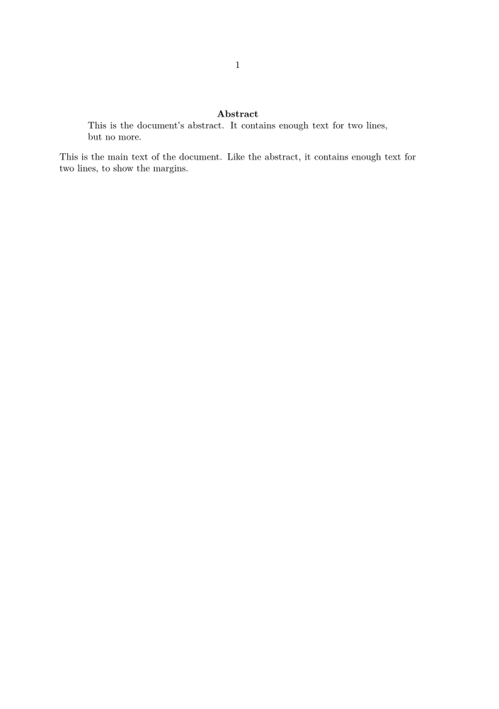

< From LaTeX to ConTeXt | Document Titles >
LaTeX
Much as with Document Titles, the standard LaTeX article and report classes define an abstract environment to typeset an abstract in a way that distinguishes it from the rest of the text. In a single-column article, it is set somewhat narrower than the main text, with the word "Abstract" centered above it.
\documentclass{article} \begin{document} \begin{abstract} This is the abstract of the paper. \end{abstract} \end{document}
ConTeXt: A simple solution
The simplest way of producing an abstract in a ConTeXt document is to specify the formatting directly. The code from LaTeX's classes.dtx is nearly trivial, and is quite easy to replicate in ConTeXt idioms.
\starttext \midaligned{\bf Abstract} \startnarrower[2*middle] This is the document's abstract. It contains enough text for two lines, but no more. \stopnarrower \blank[big] This is the main text of the document. Like the abstract, it contains enough text for two lines, to show the margins. \stoptext
- 
In the two-column document classes, LaTeX's abstract environment does nothing beyond putting a \section*{Abstract} in front of the abstract's text. This can be easily replicated in ConTeXt with \subject{Abstract}. (See Unnumbered Sections.)
ConTeXt: A more reusable solution
As with Document Titles, to replicate the spirit of the LaTeX environment, we might want to separate the document formatting commands from the actual text of the abstract.
The low-level Context command \definestartstop defines a pair of
\start - \stop commands, so we can define an
abstract environment using the following commands:
\definestartstop [abstract] [before={\midaligned{\bf Abstract} \startnarrower[2*middle]}, after={\stopnarrower \blank[big]}]
This code can be placed in the document header, or can be placed in a module file to be loaded in a number of documents. It could also be enhanced by \if statements to distinguish between the one-column and two-column cases, as LaTeX does. In any case, once these commands are defined, they can be used in the obvious manner.
\starttext \startabstract This is the document's abstract. It contains enough text for two lines, but no more. \stopabstract This is the main text of the document. Like the abstract, it contains enough text for two lines, to show the margins. \stoptext
This, of course, produces exactly the same result as the previous illustration.